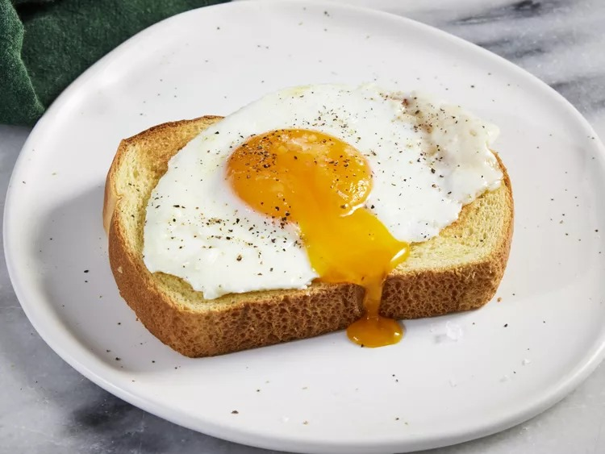

basted egg

description
This recipe produces a delicious, simple egg with satisfying, set whites and a creamy, runny yolk. It's similar
to a poached egg, but more flavorful and less fussy.
Ingredients
- 1 ½ tablespoons salted butter
- 2 large eggs
- 1 tablespoon water
- ⅛ teaspoon freshly ground black pepper
- 1 pinch flaky sea salt, or to taste
Directions
- step 1
- Melt butter in a medium nonstick skillet over medium heat. Carefully crack eggs into the skillet and let
cook until whites have almost set, about 1 minute.
- step 2
- Add water, cover skillet with a lid or cookie sheet, reduce heat to medium-low.
- step 3
- Let cook until whites have set, yolks are still runny, and some of white has set over yolk, 1 to 2 more
minutes. Remove lid and transfer eggs to a serving plate. Garnish with pepper and flaky salt, if desired.
Serve immediately.